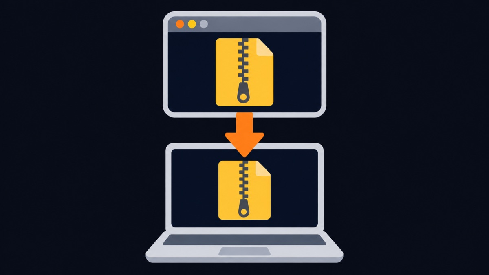
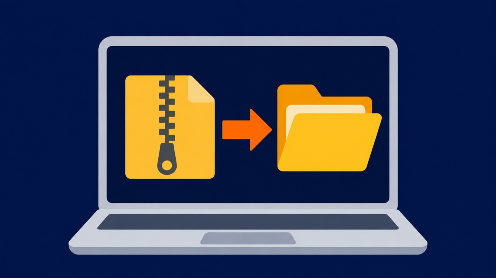
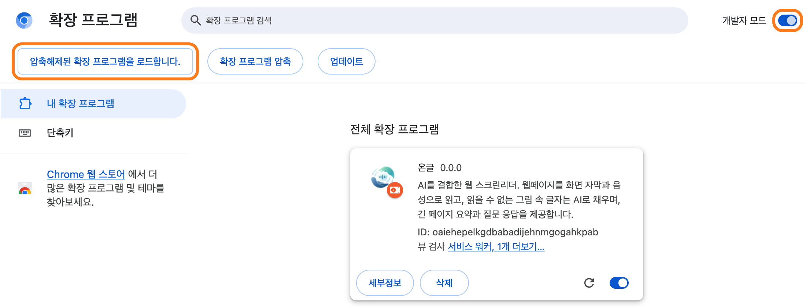
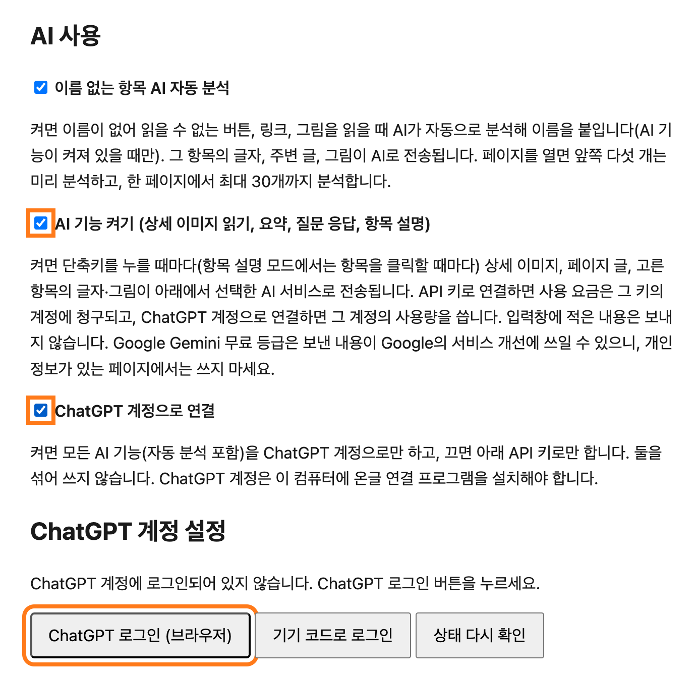
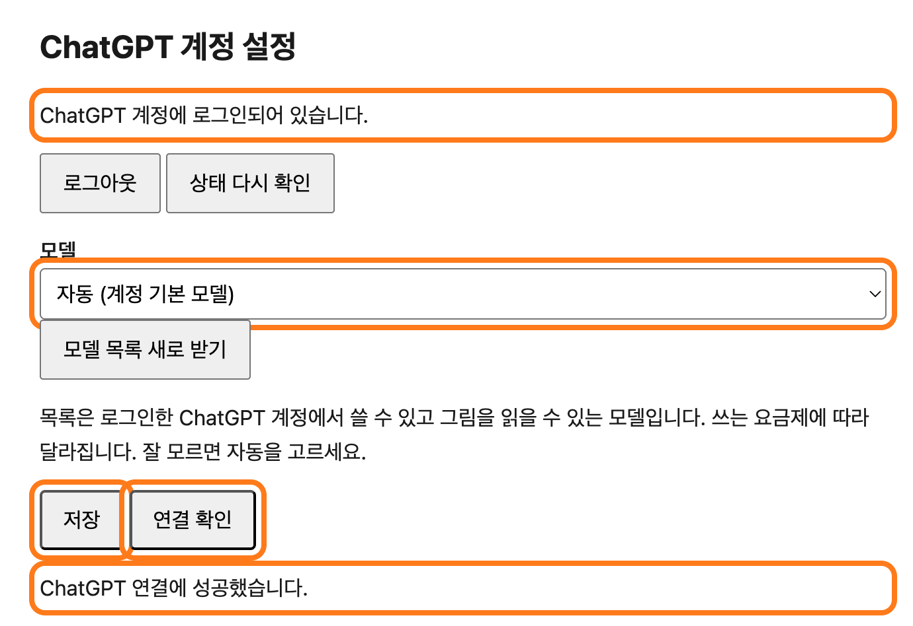

시작하기 전에 확인하세요
- 브라우저: Chrome(크롬)을 권장합니다. Edge, Whale에서도 됩니다.
- ChatGPT 계정: 이미 쓰고 있는 ChatGPT 계정이면 됩니다. 무료 계정으로도 쓸 수 있습니다. 다만 요금제에 따라 쓸 수 있는 모델과 사용 한도가 다르고, 모델에 따라 결과의 정확도와 속도에 차이가 있을 수 있습니다. 사용량은 그 계정의 요금제 한도에서 나갑니다.
- Windows: 64비트 Windows 10 또는 11. 관리자 권한은 필요 없습니다.
- Mac: 애플 실리콘(M1, M2, M3, M4 …) Mac만 됩니다. 확인하려면 화면 왼쪽 위 사과 메뉴 → "이 Mac에 관하여"에서 "칩" 항목이 "Apple M…"인지 봅니다. 인텔 Mac은 ChatGPT 연결을 지원하지 않습니다.
- API 키로만 쓸 분: 이 가이드 대신 작은 확장 zip(
ongeul-v버전.zip)만 받아 4단계부터 하면 됩니다.
-
1단계. 설치 파일 받기

- 온글 릴리즈 페이지 (새 탭)를 엽니다.
- 맨 위에 있는 가장 새 버전에서 Assets(첨부 파일) 목록을 찾습니다.
- 내 컴퓨터에 맞는 파일 하나를 눌러 받습니다.
Windows
ongeul-v버전-windows-x64.zip약 210MBMacongeul-v버전-macos-arm64.zip약 180MB
파일이 커서 받는 데 1~2분 걸릴 수 있습니다. 받은 파일은 보통 다운로드 폴더에 있습니다.
-
2단계. 압축 풀고 둘 곳 정하기

- 다운로드 폴더에서 받은 zip 파일을 마우스 오른쪽 버튼으로 누르고 모두 압축 풀기를 고릅니다.
- "파일을 아래 폴더에 풀기" 칸의 찾아보기를 눌러 문서 폴더를 고른 뒤 압축 풀기를 누릅니다.
- 문서 폴더 안에
ongeul폴더가 생겼는지 확인합니다.
- Finder의 다운로드 폴더에서 받은 zip 파일을 두 번 클릭합니다. 옆에
ongeul폴더가 생깁니다. ongeul폴더를 왼쪽 사이드바의 문서로 끌어다 놓아 옮깁니다.
중요:
ongeul폴더는 설치한 뒤에도 지우거나 옮기지 마세요. 브라우저가 그 안의extension폴더를 계속 씁니다. -
3단계. 브라우저 닫고 설치 파일 실행
- 열려 있는 브라우저 창을 모두 닫습니다. (Chrome, Edge 모두)
ongeul폴더를 열고install-windows.cmd를 두 번 클릭합니다. 파일 이름 끝의.cmd가 안 보이면install-windows를 찾습니다.- 파란 "Windows의 PC 보호" 창이 뜨면 추가 정보를 누르고 실행을 누릅니다. (인터넷에서 받은 파일이라 한 번 묻는 것입니다)
- 검은 창에 아래처럼 나오면 성공입니다. 아무 키나 눌러 창을 닫습니다.
- 열려 있는 브라우저를 모두 종료합니다. (Dock의 Chrome 아이콘을 오른쪽 클릭 → 종료)
- 터미널을 엽니다: Command+Space를 누르고 "터미널"을 입력한 뒤 Return.
- 터미널 창에 아래 글자를 입력합니다. sh 다음에 띄어쓰기 한 칸이 꼭 있어야 하고, 아직 Return은 누르지 않습니다.
sh - Finder에서
ongeul폴더를 열고install.sh파일을 터미널 창 위로 끌어다 놓습니다. 파일 위치가 자동으로 입력됩니다. - Return을 누릅니다. 아래처럼 나오면 성공입니다.
온글 연결 프로그램 1.0.0을 설치했습니다. 등록한 브라우저: Chrome, Edge Codex CLI: … (함께 담긴 것) 다음 순서: 1. 브라우저를 완전히 껐다 켭니다. 2. chrome://extensions 에서 개발자 모드를 켜고 … (이 경로를 클립보드에 복사해 두었습니다. …) 3. 온글 설정에서 AI 기능 켜기와 "ChatGPT 계정으로 연결"을 켜고 …extension 폴더 경로가 클립보드에 복사되어 있습니다. 4단계에서 붙여넣기만 하면 되니 다른 것을 복사하지 마세요.
-
4단계. 브라우저에 온글 넣기
- 브라우저를 다시 켭니다.
- 주소창에 아래 주소를 입력하고 Enter를 누릅니다. (Edge는
edge://extensions)chrome://extensions - 오른쪽 위 개발자 모드 스위치를 켭니다.
- 왼쪽 위에 생긴 압축해제된 확장 프로그램을 로드합니다 버튼을 누릅니다.

개발자 모드를 켜면 주황색으로 표시한 버튼이 나타납니다. - 폴더 고르는 창이 열리면 위쪽 주소 칸을 누르고 Ctrl+V로 붙여넣은 뒤 Enter, 그다음 폴더 선택을 누릅니다.
- 폴더 고르는 창이 열리면 Command+Shift+G를 누르고 Command+V로 붙여넣은 뒤 Return, 그다음 선택을 누릅니다.
- 목록에 온글 카드가 생기고, 온글 설정 화면이 새 탭으로 열리면 성공입니다.
붙여넣을 경로를 잃어버렸다면 직접 고르면 됩니다:
문서 → ongeul → extension문서 → ongeul → extension폴더를 선택하세요. ongeul 폴더가 아니라 그 안의 extension 폴더입니다.예전 온글이 이미 있다면: 목록의 예전 온글 카드에서 삭제를 누른 뒤 위 순서로 새로 넣으세요. 이 버전부터 온글이 새 확장으로 인식되어, API 키 같은 설정을 한 번 다시 넣어야 합니다.
-
5단계. 온글 설정에서 ChatGPT 켜기
- 온글 설정 화면을 엽니다. 4단계에서 자동으로 열렸다면 그대로 씁니다. 닫았다면: 확장 프로그램 화면의 온글 카드에서 세부정보 → 확장 프로그램 옵션을 누릅니다.
- 아래로 내려가 AI 사용 부분을 찾습니다.
- AI 기능 켜기에 체크합니다.
- ChatGPT 계정으로 연결에 체크합니다. 그러면 아래에 "ChatGPT 계정 설정"이 나타납니다.

두 칸을 체크하면 ChatGPT 로그인 버튼이 보입니다. "연결 프로그램이 설치되어 있지 않습니다"라고 나오면 3단계 설치가 안 된 것입니다. 브라우저를 완전히 닫고 3단계를 다시 해 보세요. 잘 안 될 때도 참고하세요.
-
6단계. ChatGPT 로그인
- ChatGPT 로그인 (브라우저) 버튼을 누릅니다.
- 새 탭에 OpenAI 로그인 페이지가 열립니다. 평소 ChatGPT에 로그인하는 방법(이메일, Google, Apple 등)으로 로그인합니다.
- "로그인되었습니다"라는 화면이 나오면 그 탭을 닫고 온글 설정 탭으로 돌아옵니다.
- 설정 화면에 "ChatGPT 계정에 로그인되어 있습니다"가 보이면 성공입니다.
로그인 페이지가 안 열리면 화면에 생긴 "OpenAI 로그인 페이지 열기" 링크를 누르세요. 그래도 안 되면 기기 코드로 로그인을 누릅니다. 온글이 일회용 코드(예: AB12-CD345)를 보여 주고 한 글자씩 읽어 주니, 열린 OpenAI 페이지에 그 코드를 입력하면 됩니다. 휴대폰으로 입력해도 됩니다.
-
7단계. 저장하고 연결 확인
- 모델은 잘 모르면 자동 (계정 기본 모델)을 그대로 둡니다.
- 맨 아래 저장을 누릅니다.
- 연결 확인을 누릅니다. 몇 초 뒤 "ChatGPT 연결에 성공했습니다"가 나오면 모두 끝났습니다.
무료 ChatGPT 계정도 됩니다. 모델 목록에는 내 요금제에서 쓸 수 있는 모델만 나옵니다. 무료 계정은 고를 수 있는 모델이 적고 사용 한도가 낮을 수 있으며, 모델에 따라 상세 이미지 읽기나 요약의 정확도와 걸리는 시간에 차이가 날 수 있습니다. 결과가 아쉬우면 설정에서 다른 모델을 골라 보세요.

"ChatGPT 연결에 성공했습니다"가 나오면 준비 끝입니다.
설치 끝! 이제 써 보세요
아무 웹페이지에서 AltOption+Shift+O로 온글을 켜고 ↓를 누르면 한 항목씩 읽습니다. 키와 AI 기능은 바로 아래 사용법에서 하나씩 익혀 보세요.
설치 후 사용법
온글 사용법
설치를 마쳤다면 아래 순서대로 익혀 보세요. 모든 명령은 AltOption+Shift와 글자 키를 함께 누릅니다. 온글도 안내할 때 "Alt와 Shift와 O"처럼 실제 키 이름으로 알려 줍니다.
쓰기 전에 두 가지만 확인하세요
- 다른 스크린리더는 끕니다. NVDA, 센스리더, 내레이터VoiceOver가 켜져 있으면 두 프로그램이 함께 읽어 소리가 겹칩니다.
- 단축키가 지정됐는지 봅니다. 주소창에 아래 주소를 열고, 온글의 단축키 4개(켜기/끄기, 메뉴, 읽기 멈춤, 다시 읽기)에 키가 들어 있는지 확인합니다.
비어 있는 칸이 있으면 연필 아이콘을 누르고 아래 표의 키를 직접 눌러 지정하세요. 이 화면은 크롬 설정 화면이라 온글이 읽어 줄 수 없습니다. 다른 확장 프로그램이 같은 키를 쓰고 있으면 비어 있을 수 있습니다.
chrome://extensions/shortcuts
어디서든 쓰는 키 4개
주소창에 있을 때도 동작합니다.
| 키 | 하는 일 |
|---|---|
| AltOption+Shift+O | 온글 켜기, 끄기. 켜면 "온글이 켜졌습니다"와 함께 지금 페이지 제목을 알려 주고, ↓로 한 항목씩 읽을 수 있습니다. |
| AltOption+Shift+M | 온글 메뉴. 모든 기능을 목록에서 골라 실행합니다. 첫 항목은 사용 가이드라서 귀로 사용법을 들을 수 있습니다. |
| AltOption+Shift+X | 읽기 멈춤 |
| AltOption+Shift+R | 지금 위치 다시 읽기. 어디 있는지 모를 때 누릅니다. |
페이지 읽고 이동하기
웹페이지 안에서 누르는 키입니다. 글자 키는 한글 입력 상태에서도 그대로 동작합니다. Shift를 함께 누르면 위쪽(이전)으로 갑니다.
| 키 | 하는 일 |
|---|---|
| ↓ / ↑ | 다음 항목 / 이전 항목 읽기 |
| H | 다음 제목. 1~6은 그 수준의 제목 |
| K · B | 다음 링크 · 다음 버튼 |
| F · E | 다음 입력 요소 · 다음 편집창 |
| X · R · C | 다음 체크박스 · 라디오 버튼 · 콤보 상자(선택 목록) |
| T · L · G · D | 다음 표 · 목록 · 그림 · 영역 |
| CtrlControl+Home / End | 페이지 처음 / 끝 (Home 키가 없는 맥북은 fn+← / →를 함께) |
| AltOption+Shift+A 또는 AltOption+Shift+↓ | 지금 위치부터 끝까지 계속 읽기. 아무 키나 누르면 멈춥니다. |
| CtrlControl | 읽던 말 바로 멈추기 |
| Enter / Space | 링크·버튼 누르기. 편집창에서는 글쓰기 모드로 바뀌고, Esc로 읽기 모드로 돌아옵니다. |
| AltOption+Shift+1 | 키 도움말. 지금 쓸 수 있는 키를 목록으로 들려줍니다. |
읽은 내용은 화면 아래 자막으로도 보이고, 읽는 위치에는 주황색 테두리가 표시됩니다. 초점이 주소창에 있으면 F6을 눌러 웹페이지로 돌아오라고 알려 줍니다.
AI 기능 쓰기
설치 단계에서 ChatGPT를 연결했다면 바로 쓸 수 있습니다. 온글 메뉴(AltOption+Shift+M)에서도 고를 수 있습니다.
| 키 | 기능 | 어떻게 되나 |
|---|---|---|
| AltOption+Shift+D | 상세 이미지 읽기 | 상품 상세 이미지 속 가격, 옵션, 주의사항 같은 글자를 읽어 "상세 이미지 내용, AI 추출" 상자로 보여 주고 그 위치로 이동합니다. 소제목(H)으로 건너뛰며 읽을 수 있습니다. 그림이 많으면 1~2분 걸리며, 기다리는 동안 지난 시간을 알려 줍니다. |
| AltOption+Shift+S | 페이지 요약 | "페이지 요약, AI 생성" 창이 열립니다. 항목마다 "원문으로 이동" 버튼으로 근거 위치에 갈 수 있고, Esc로 닫으면 원래 위치로 돌아갑니다. |
| AltOption+Shift+Q | 페이지에 질문하기 | "배송비 얼마야?"처럼 묻고 Enter를 누르면 페이지 내용만 근거로 답합니다. 페이지에 답이 없으면 "페이지에서 찾지 못했습니다"라고 하고, "근거 위치로 이동"으로 확인할 수 있습니다. |
| AltOption+Shift+E | 현재 항목 설명 | 지금 읽는 버튼이나 그림이 무엇인지 AI가 설명합니다. |
| AltOption+Shift+I | AI 결과 모음 | 지금까지 받은 AI 결과를 목록으로 봅니다. 고르면 그 위치로 가고, 닫았던 요약·상세 이미지 결과도 다시 열립니다. |
| (자동) | 이름 없는 버튼 채우기 | 이름이 없는 버튼이나 그림을 읽으면 "AI 분석 중"이라고 알리고, 이동은 계속할 수 있습니다. 끝나면 "장바구니 담기, AI 추정, 버튼"처럼 읽습니다. |
들리는 말의 뜻
- AI 추정, AI 추출, AI 생성: AI가 만든 이름이나 글입니다. 틀릴 수 있으니 가격이나 주의사항처럼 중요한 내용은 "원문으로 이동"이나 "근거 위치로 이동"으로 확인하세요.
- 추정: 장바구니, 찜하기, 검색처럼 흔한 아이콘은 AI를 기다리지 않고 페이지의 단서로 바로 이름을 붙입니다. 예: "장바구니, 추정, 0, 링크"
상세 이미지를 먼저 읽으면(AltOption+Shift+D) 그 내용도 요약과 질문의 근거에 들어갑니다. 상품 페이지에서는 상세 이미지 읽기 → 질문 순서로 쓰면 더 정확합니다.
연습용 쇼핑몰에서 처음 해 보기
테스트용 쇼핑몰 "온글몰"에서 아래 순서대로 따라 해 보세요. 실제로 결제되지 않습니다.
- 온글몰을 열고 AltOption+Shift+O로 온글을 켭니다.
- H를 몇 번 눌러 제목을 따라 내려가며 상품 목록을 찾습니다.
- K로 상품 링크로 가서 Enter를 눌러 상품 페이지를 엽니다.
- AltOption+Shift+D로 상세 이미지를 읽고, 결과 상자에서 ↓로 가격과 주의사항을 들어 봅니다.
- AltOption+Shift+Q로 "배송비 얼마야?"라고 물어봅니다.
- B로 버튼을 오가며 옵션을 고르고 "장바구니 담기"를 눌러 봅니다.
내게 맞게 바꾸기
- 안내 길이: 처음 몇 번은 무엇을 누르면 어떻게 되는지 자세히 안내하고, 익숙해지면 짧게 안내합니다. 온글 설정의 "안내를 얼마나 자세히 읽을까요?"에서 항상 자세히, 항상 짧게로 바꿀 수 있습니다.
- 기능 키 글자: 요약(S), 질문(Q), 상세 이미지(D), 현재 항목 설명(E), 메뉴(M) 글자는 온글 설정에서 바꿉니다.
- AI 모델: 온글 설정의 ChatGPT 계정 설정에서 모델을 고릅니다. 잘 모르면 "자동"이 좋습니다.
- 온글 설정 여는 곳:
chrome://extensions의 온글 카드 → 세부정보 → 확장 프로그램 옵션
잘 안 될 때
"온글 연결 프로그램이 이 컴퓨터에 설치되어 있지 않습니다"
브라우저를 완전히 껐다가 켜 보세요. Windows는 화면 오른쪽 아래 알림 영역에 크롬 아이콘이 남아 있으면 오른쪽 클릭 → 종료합니다. 그래도 같으면 3단계 설치 파일을 다시 실행하세요.
설치 창에 "설치하지 못했습니다. 브라우저를 모두 닫고…"가 나옴
브라우저가 온글 연결 프로그램을 쓰고 있어서입니다. 브라우저를 모두 닫고 설치 파일을 다시 실행하세요.
Windows에서 설치 파일이 바로 닫히거나 실행되지 않음
압축을 풀지 않고 zip 안에서 바로 실행하면 안 됩니다. 2단계처럼 모두 압축 풀기를 먼저 한 뒤, 풀린 ongeul 폴더 안의 install-windows.cmd를 실행하세요.
Mac에서 "확인되지 않은 개발자" 같은 경고가 나옴
3단계의 터미널 방법(sh 입력 후 install.sh 끌어다 놓기)으로 실행하면 이 경고 없이 설치됩니다.
"ChatGPT 사용 한도에 도달했습니다"
ChatGPT 요금제의 사용 한도를 다 쓴 것입니다. 한도가 풀릴 때까지 기다리거나 설정에서 다른 모델을 고르세요. 무료 계정은 한도가 낮아 더 빨리 닿을 수 있습니다.
AI 결과가 느리거나 정확하지 않아요
고른 모델과 요금제에 따라 정확도와 속도가 다를 수 있습니다. 온글 설정의 ChatGPT 계정 설정에서 다른 모델을 골라 보세요. 상세 이미지는 그림이 많을수록 오래 걸립니다(1~2분). AI 결과에는 "AI 추정", "AI 추출"이 붙으니, 가격 같은 중요한 내용은 원문 위치로 이동해 확인하세요.
온글 키를 눌러도 아무 반응이 없어요
chrome://extensions/shortcuts에서 온글 단축키 4개가 비어 있지 않은지 확인하세요(쓰기 전에 확인). 페이지를 연 뒤에 온글을 설치했다면 그 페이지를 새로고침(F5)하세요. chrome://로 시작하는 브라우저 설정 화면과 크롬 웹 스토어에서는 온글이 동작하지 않습니다.
"ChatGPT 로그인이 풀렸습니다"
온글 설정의 ChatGPT 계정 설정에서 6단계처럼 다시 로그인하세요.
새 버전으로 바꾸고 싶어요
브라우저를 모두 닫고, 새 zip을 받아 같은 자리(문서 폴더)에 풀어 덮어쓴 뒤 3단계 설치 파일을 다시 실행합니다. 브라우저를 켜고 확장 프로그램 화면에서 온글 카드의 새로고침(동그란 화살표)을 누르면 됩니다. 설정은 그대로 남습니다.
지우는 방법
ongeul폴더의uninstall-windows.cmd를 두 번 클릭합니다.- 터미널에
sh(띄어쓰기 포함)을 입력하고ongeul폴더의uninstall.sh를 끌어다 놓은 뒤 Return을 누릅니다. - 확장 프로그램 화면에서 온글 카드의 삭제를 누릅니다.
ongeul폴더를 휴지통에 버립니다.
연결 프로그램, 함께 담긴 프로그램, ChatGPT 로그인 정보가 모두 지워집니다.
알아 두세요
- 요약·질문·이미지 읽기를 하면 그 페이지의 글과 그림이 내 ChatGPT 계정으로 OpenAI에 전송됩니다. 입력창에 적은 내용은 보내지 않습니다.
- 온글은 ChatGPT 비밀번호나 로그인 정보를 보지 않습니다. 로그인은 OpenAI 공식 프로그램(Codex)이 처리합니다.
- 대화 기록은 남기지 않습니다.